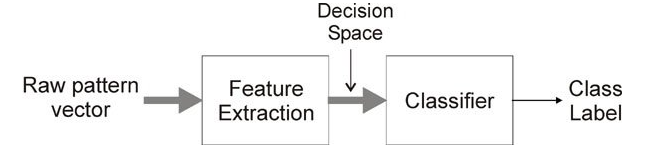

A feature extraction and classification system has been create to predict heart disease. Addition, the results of this algorithm compared . The Chi-Square Test technique used to introduce information gain, Chi-Square Test, Mean Absolute Difference, and Dispersion ratio from feature extraction methods. In classification algorithms, the MLP and KNN algorithms, also utilized. The dataset was taken from the Kaggle platform and name as Heart Disease UCI. Also, the data set’s features are given below.
Database Information:
This database contains 76 attributes, but all published experiments refer to using a subset of 14 of them. In particular, the Cleveland database is the only one that has been used by ML researchers to this date. The “goal” field refers to the presence of heart disease in the patient. It is integer value from 0 (no presence) to 4.
Attribute Information:
age
sex
chest pain type (4 values)
resting blood pressure
serum cholestoral in mg/dl
fasting blood sugar > 120 mg/dl
resting electrocardiographic results (values 0,1,2)
maximum heart rate achieved
exercise induced angina
oldpeak = ST depression induced by exercise relative to rest
the slope of the peak exercise ST segment
number of major vessels (0-3) colored by flourosopy
thal: 3 = normal; 6 = fixed defect; 7 = reversable defect

The results obtained by using the Keras Sequential model, which one of the data augmantation algorithm models, are given below. Then for the first training, the parameter values, the number of neurons for the input layer, 5 activation parameters selected. In this training, an intermediate layer used and consists of 16 neurons, and similarly the activation parameter is tanh. Finally, in the output layer, which has 1 output, the activation parameter sigmoid selected.
In response to these obtained input and output values, the adam algorithm chosen for optimization. This is because it is a good algorithm for first-orderalgorithm for first-order gradient-based optimization and the most widely used method for optimizing neural networks. Additionally, number of iterations of 10 used. In addition, the test data success rate for this model found to be 0.5714. Similarly the success rate for the training data found to be 0.5896.
The KNN algorithm used for the second model. The K coefficient determined as 3 and the model trained. Then, predict data found according to the entered values. In addition,The test data success rate for this model found to be 0.8352. Similarly, the success rate for the training data found to be 0.8302.
Comparatively, if a general evaluation is made, the training success rate for the first model is higher, while the test success rate for the second model is higher.
You can find a lot of information on the subject here.
Click here to access the codes related to this article.